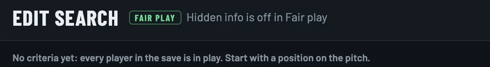
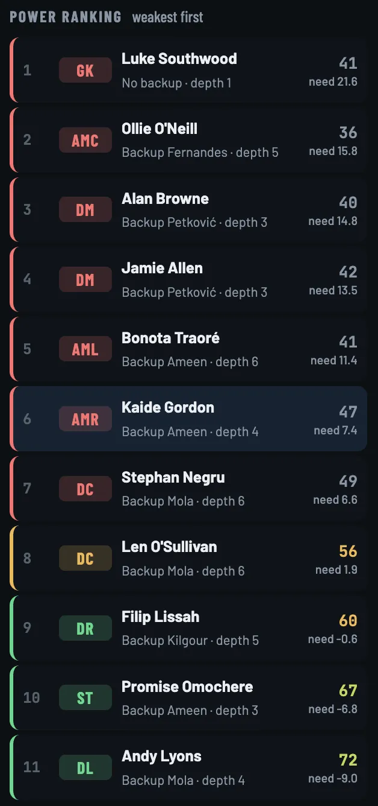
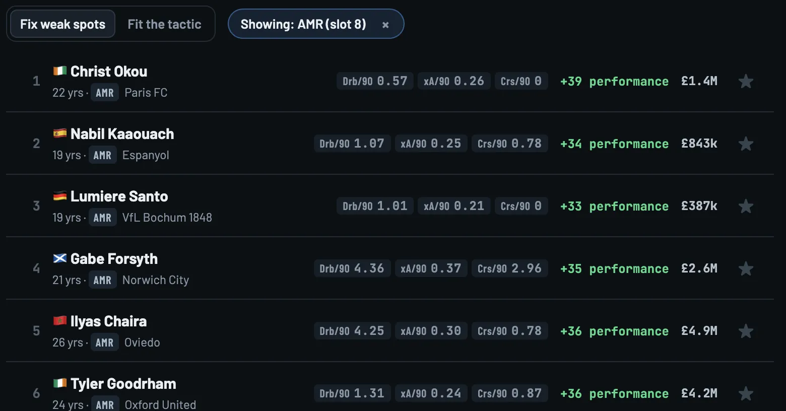
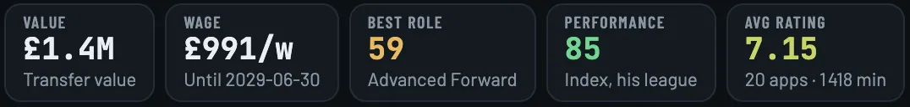
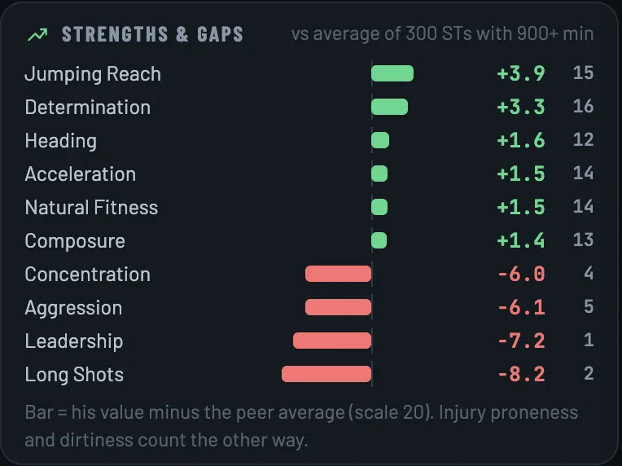
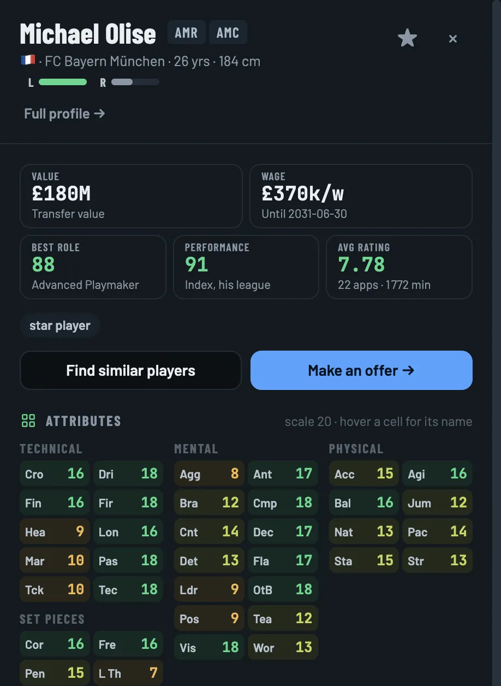
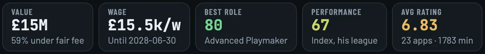
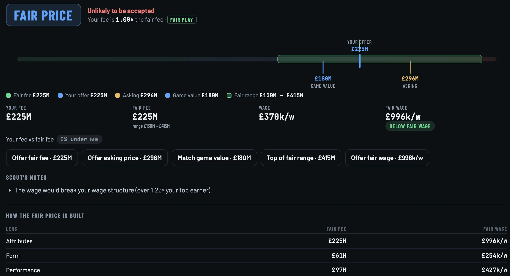
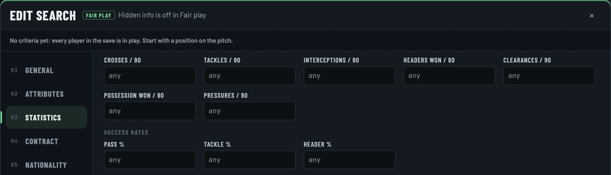

01
Full
The whole truth.
Current and potential ability, hidden attributes, personality, and a written scouting report on every player. Wonderkids in seconds.

Free scouting tool for Football Manager 26 · v0.4.4
FM26 Scout reads your save, without changing it, and turns every player into numbers you can sort: match output per 90, a fair fee, how far under or over it he sells. Find the ones who play better than they cost.
Free. Ready in about three minutes.
FM26 Scout runs on Windows and Apple Silicon Macs.
Three ways to scout. Pick one, the screen switches.


FullCA and PA, straight from the save.
Every number on this page comes from one real Bristol Rovers save, January 2028. Your player count depends on your database.
The transfer window problem
Search screen after search screen, one player at a time.
Every player in the save in one table. Sort, filter, star, export.
Big names cost big money, whatever they did on the pitch.
A performance score built from match stats, and a fair fee from similar players in your save.
Seeing everything kills the fun of scouting.
Fair play shows only what a scout sees in game. You choose how much to know.
Run the window your way
01
The whole truth.
Current and potential ability, hidden attributes, personality, and a written scouting report on every player. Wonderkids in seconds.
02
Find them yourself.
What a scout shows you in game, and no more. Visible attributes, roles and stats. No CA, no PA, no hidden attributes, even in the search filters.
03
Only output counts.
Attributes switched off. Players ranked by a performance score from per-90 match stats. Under 900 minutes there's no fair fee: too few games to price him.

The mode follows you everywhere: tables, search, profiles, prices. One click switches it. Same save, same players, different eyes.
Moneyball, played for real
Bristol Rovers, January 2028, Moneyball on. Here's how one transfer gets found, from the hole in the team to the player file.
01My Club
Your formation is read from your matches. Every slot gets a score, and the power ranking lists positions weakest first. At right wing, Kaide Gordon rates 47.
 1
1
202Targets
Click the slot. Targets come ranked by how much performance they would add, with the per-90 stats that matter for the role and the fee. First name: Christ Okou, 22, Paris FC.

12303The file
Performance 85 in his league, 7.15 average over 20 games, for £1.4M. His best role rates 59. Sign the output, or wait for a finished player: the app shows both sides, you decide.

The player file
Every profile opens on the same tabs. The mode decides what's inside.
 123
123

Similar players & fair prices
Every player gets a fair fee, from players with a similar profile, age, level and contract in your save. The deal % says how far under or over it he's priced. Deal Finder sorts the whole save by it.

1 23
23One button on every player. In Full and Fair play it matches attributes. In Moneyball it matches in-game stats. The fee map shows who's cheap for what he does.

123Edit search
Pick positions on a pitch. Set a minimum for any attribute, with ±1 buttons. Filter on per-90 stats, success rates, contract, fee and nationality. A live count tells you how many players are left. Name the search and reuse it next window.

12Kick-off
Unzip, double-click FM26 Scout. Your browser opens by itself.
Your FM26 saves are listed. Click one and give it about a minute.
Pick a mode, filter, compare, shortlist. Close the tab and the app closes with it.
Transfer window's open
Free. Read-only. Works offline. Your save never leaves your computer.
On Mac, the app is signed and notarised by Apple, so it opens like any other app. On Windows, SmartScreen asks you to confirm once. The code is public on GitHub if you want to check what it does.
FM26-Scout.exe. If Windows says it protected your PC, click More info.FM26-Scout-mac.zip.Apple Silicon Macs only (M1 or later). Intel Macs aren't supported.
Before you ask
No. The save is only read, never written. FM26 Scout makes its own copy of the player data on your computer and works from that.
Only if you want it to be. Fair play hides CA, PA, hidden attributes and personality, so you scout with what a scout shows you in game. Moneyball hides attributes entirely and judges players on match stats.
An estimate of what a player is worth, built from players with a similar profile, age, level and contract in your own save. The deal % compares it with his real asking price. In Moneyball, a player needs 900 minutes before he gets one.
Football Manager 26 saves (.fm). The app lists the ones it finds. Loading another save replaces the previous one.
Yes. Every player in the save, men and women, with a switch between them.
No. Everything runs on your computer. At launch it asks GitHub whether a newer version exists and shows a link if there is one. Nothing about you or your save is sent.
Microsoft's signing costs a yearly fee, which a free project doesn't pay, so SmartScreen asks once. Click More info, then Run anyway. The Mac version is signed and notarised by Apple and opens without a warning.
No. It's free and open source. No account, no subscription, and the app itself has no tracking. This website counts visits with Cloudflare Web Analytics: no cookies, nothing about you personally.